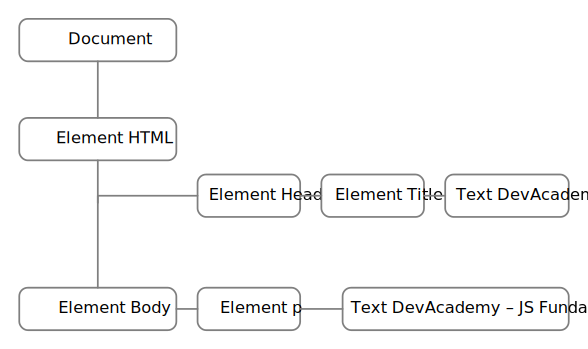
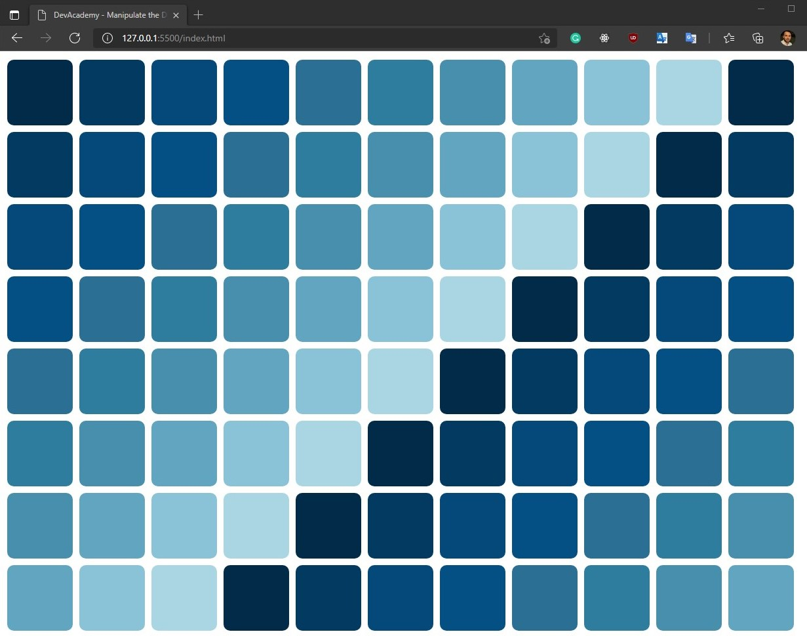

The differences between HTML and CSS
HTML defines the overall structure of the web page whereas CSS defines the visual presentation of the web page.
For the most part, HTML and CSS enable you to separate structure and presentation, respectively. This distinction is important because when you keep these two aspects of a web page separate, your page will be easier to build, easier to maintain, and easier to customize.
I suppose a good analogy would be HTML is like furniture in a room in your house, while CSS is the style of the interior decoration.
Control flow and loops using an everyday life example
On the code below show a pseudo code for a day life routine. In this case how to prepare a cafe.
/*
Making an Omelet
Take the ingredients: eggs, milk, salt, pepper */
var eggs;
var milk;
var salt;
Var bowl;
While is not blended {
/* Beat the all ingredients together until been blended */
Bowl += beat(eggs, milk, salt, pepper);
}The Document Object Model (DOM)
What is the DOM? In short, the DOM is a way of conceptualizing the contents of a document.
The Document Object Model (DOM) is an application programming interface (API) for HTML and XML documents. The DOM represents a document as a hierarchical tree of nodes, allowing developers to add, remove, and modify individual parts of the page.
HIERARCHY OF NODES
Any HTML can be represented as a hierarchy of nodes using the DOM. There are several node types, each representing different information and/or markup in the document. Each node type has different characteristics, data, and methods, and each may have relationships with other nodes. These relationships create a hierarchy that allows markup to be represented as a tree, rooted at a particular node. For instance, consider the following HTML:
<html>
<head>
<title>DevAcademy</title>
</head>
<body>
<p>DevAcademy - JS Fundamentals</p>
</body>
</html> This simple HTML document can be represented in a hierarchy, as illustrated below.
A document node represents every document as the root. In this example, the only child of the document node is the HTML element, which is called the document element. The document element is the outermost element in the document within which all other elements exist. There can be only one document element per document. In HTML pages, the document element is always the HTML.
Every piece of markup can be represented by a node in the tree: HTML elements are represented by element nodes, attributes are represented by attribute nodes, the document type is represented by a document type node, and comments are represented by comment nodes. In total, there are 12 node types, all of which inherit from a base type.
Interacting with the DOM
The code below will create some boxes with a width of 100 and a height of 100 pixels.
You can see within the JavaScript file that there is an Array called "colors", and this is really just to make my boxes look a little bit more interesting.
The script is going through all of those different colors and creating boxes with each of the colors. It just cycles through the different colors. If I create like 20 boxes and I only have 10 colors, after the tenth color is used it'll just go back to the first one, and so on and so forth.
The JavaScript Code:
var colors = [
'#012a4a',
'#013a63',
'#01497c',
'#014f86',
'#2a6f97',
'#2c7da0',
'#468faf',
'#61a5c2',
'#89c2d9',
'#a9d6e5',
];
function makeBoxes(numberOfBoxes) {
var colorCount = colors.length;
var currentColor = 0;
var myElement;
var myNode = document.querySelector('.boxes');
for (var i = 0; i < numberOfBoxes; i++) {
myElement = document.createElement('div');
myElement.className = 'box';
myElement.style.backgroundColor = colors[currentColor];
console.log(colors[currentColor])
myNode.appendChild(myElement);
if (currentColor === colorCount-1) {
currentColor = 0;
} else {
currentColor++;
}
}
}
makeBoxes(10000);
The HMTL code:
<!DOCTYPE html>
<html lang="en">
<head>
<meta charset="UTF-8" />
<meta http-equiv="X-UA-Compatible" content="IE=edge" />
<meta name="viewport" content="width=device-width, initial-scale=1.0" />
<link rel="stylesheet" href="style.css" />
<title>DevAcademy - Manipulate the DOM</title>
</head>
<body>
<div class="boxes"></div>
<script src="./javascript.js"></script>
</body>
</html>
The CSS code:
.box {
display: block;
background-color: #ddd;
width: 100px;
height: 100px;
border-radius: 10px;
float: left;
margin: 5px;
}
Result:
The difference between accessing data from arrays and objects.
Array elements are accessed using index in bracket notation. Array index starts at zero.
const myArray = ['D', 'e', 'v', 'A', 'c', 'a', 'd', 'e', 'm', 'y'];
console.log(myArray[0]); // outout=> D
console.log(arrNums[3]); // outout=> A
There are two ways for accessing an Object. Square brackets and Dot notation.
Square brackets = Syntax: expression[expression]
const bootCamp = {
name: "DevAcademy"
format: "Online"
}
console.log(bootCamp[name]); // output => DevAcademy
Dot notation.
To access a property of an object through dot notation, we must know the property name beforehand.
Syntax: expression.identifier
const bootCamp = {
name: "DevAcademy"
format: "Online"
}
console.log(bootCamp.name); // output => DevAcademy
What functions are and why they are useful.
Commonly, programs carry out the same or similar tasks repeatedly during the course of their execution. For you to avoid rewriting the same piece of code over and over again, JavaScript has the means to parcel up parts of your code into reusable units, called functions. Once you’ve written a function, it is available for the rest of your program to use, as if it were itself a part of the JavaScript language.
Using functions also makes your code easier to debug and maintain. Suppose you’ve written an application to calculate shipping costs; when the tax rates or haulage prices change, you’ll need to make changes to your script. There may be 50 places in your code where such calculations are carried out. When you attempt to change every calculation, you’re likely to miss some instances or introduce errors. However, if all such calculations are wrapped up in a few functions used throughout the application, then you just need to make changes to those functions. Your changes will automatically be applied all through the application.
Functions are one of the basic building blocks of JavaScript and will appear in virtually every script you write. In this lesson you see how to create and use functions.